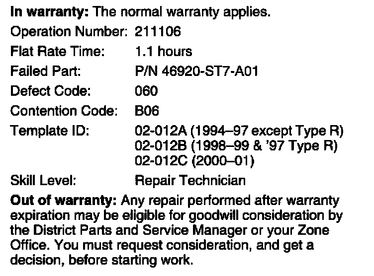

Clutch Master Cylinder - Fluid Leakage
02-012May 6, 2002
Applies To: 1994-01 Integra With M/T - ALL
Fluid Seepage From the Clutch Master Cylinder
SYMPTOM
Fluid from the clutch master cylinder leaks inside the vehicle.
PROBABLE CAUSE
The clutch master cylinder seals are worn.
CORRECTIVE ACTION
Install a new clutch master cylinder and a new clutch line A.
PARTS INFORMATION
Clutch Master Cylinder:
P/N 06469-ST7-305
Clutch Line A:
1994-97 (except 1997 Type R)
P/N 06469-ST7-306
1998-99 (and 1997 Type R)
P/N 06469-ST7-307
2000-01 (all)
P/N 06469-ST7-308
REQUIRED MATERIALS
DOT 3 Brake Fluid: P/N 08798-9008

WARRANTY CLAIM INFORMATION
REPAIR PROCEDURE
1. Remove the clutch line from the clutch master cylinder and from the connection joint mounted on the engine compartment bulkhead.
2. Remove the clutch master cylinder from the vehicle. Refer to page 12-5 of the 1998 Integra Service Manual.
3. Install the new clutch master cylinder. Torque the mounting nuts to 13 Nm (9 lb-ft).
4. Install the new clutch line A. Torque the flare nut connections to 15 Nm (11 lb-ft).
5. Bleed the clutch hydraulic system.
6. Test clutch system operation, and check for leaks.